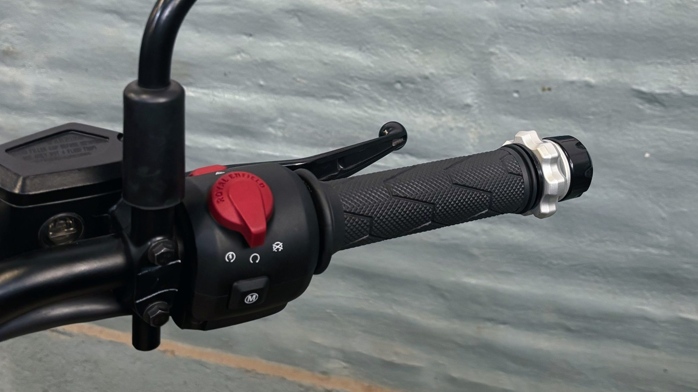
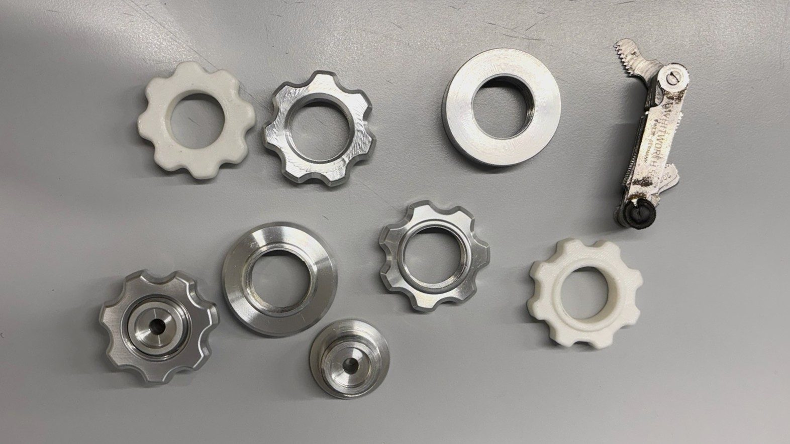
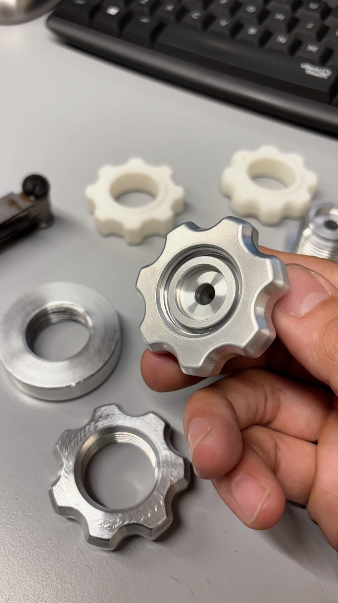
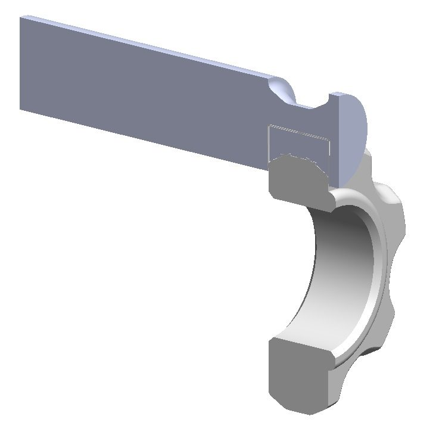
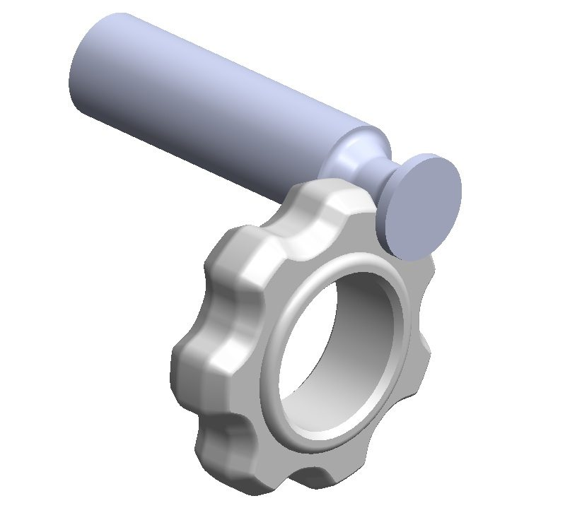
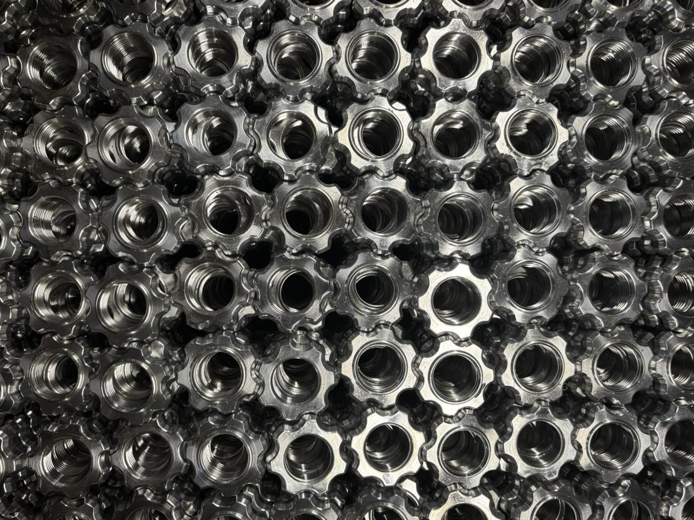
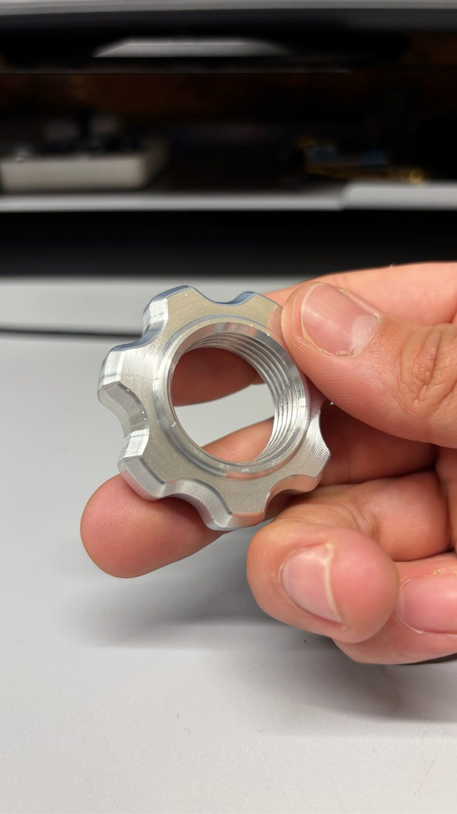
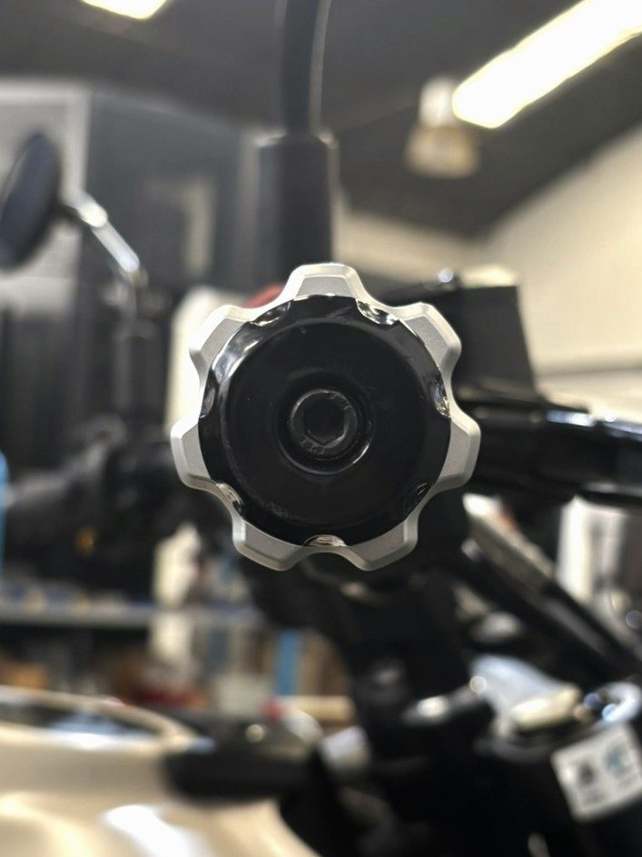

Proyecto 04 · Royal Enfield · Desarrollo de accesorioProject 04 · Royal Enfield · Accessory development
Control crucero Himalayan 450Himalayan 450 cruise control
Perilla de regulación de un control crucero mecánico desarrollado en la empresa para la Royal Enfield Himalayan 450. El mecanismo ya estaba definido: mi trabajo fue la geometría del componente de ajuste, pensada para el torneado CNC, el uso y una regulación precisa.
Adjustment knob for an in-house mechanical cruise control for the Royal Enfield Himalayan 450. The mechanism was already defined: my work was the geometry of the adjustment component, designed for CNC turning, usability and precise adjustment.
Iterar la formaIterating the form
La perilla pasó por varias versiones, primero como prototipos impresos y después en aluminio, hasta llegar a una forma cómoda de usar, que regula con precisión y es simple de mecanizar.
The knob went through several versions, first as printed prototypes and then in aluminum, until reaching a form that is comfortable to use, adjusts precisely and is simple to machine.


Geometría definida por el procesoProcess-driven geometry
La geometría se definió a partir de las restricciones del torneado CNC y del herramental de forma. Se desarrolló una herramienta de corte a medida que mecaniza el perfil en una sola operación: tolerancias ajustadas, terminación superficial pareja y producción eficiente.
The geometry was defined by CNC turning constraints and form tooling. A custom cutting tool machines the profile in a single operation: tight tolerances, consistent surface finish and efficient production.


En serieIn series production
Con la herramienta de forma, el perfil se mecaniza en una sola operación, lo que hace la producción repetible y eficiente. Desarrollada para fabricación propia, hoy está a la venta.
With the form tool, the profile is machined in a single operation, making production repeatable and efficient. Developed for in-house manufacturing, it is on sale today.

En la mano y en la motoIn hand and on the bike
El resultado es un componente mecanizado que se ajusta con precisión y se integra al puño de la moto sin desentonar.
The result is a machined part that adjusts precisely and integrates seamlessly with the handlebar grip.

